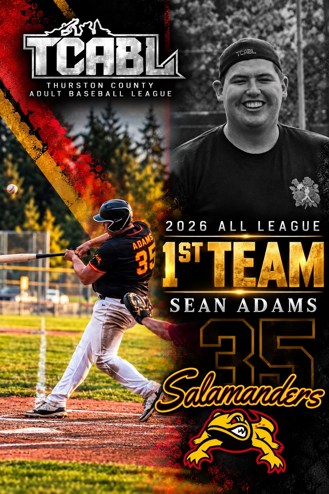
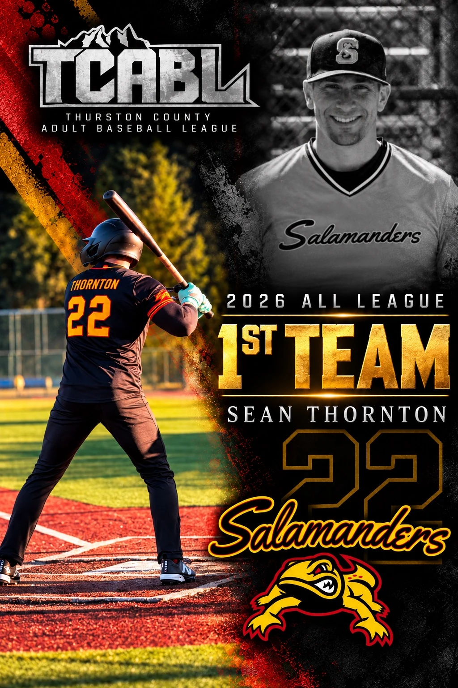
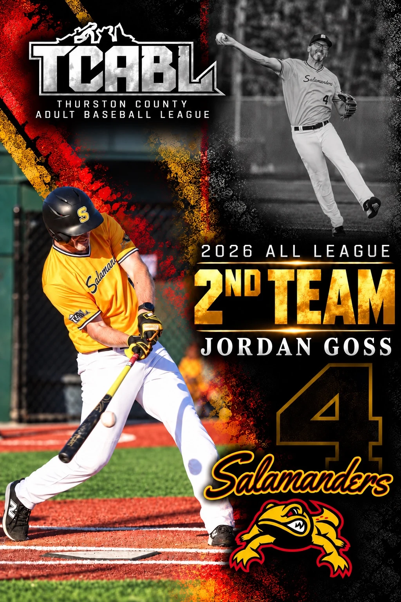
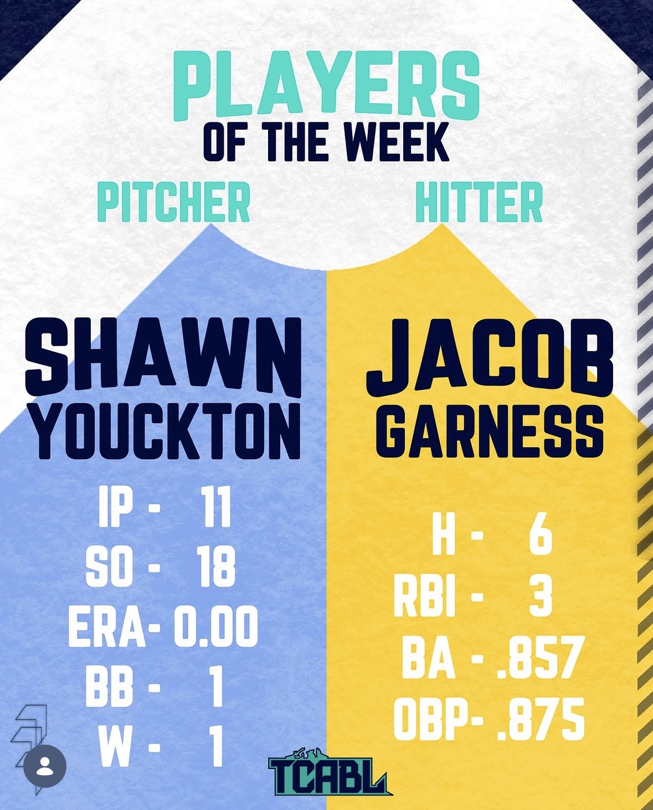
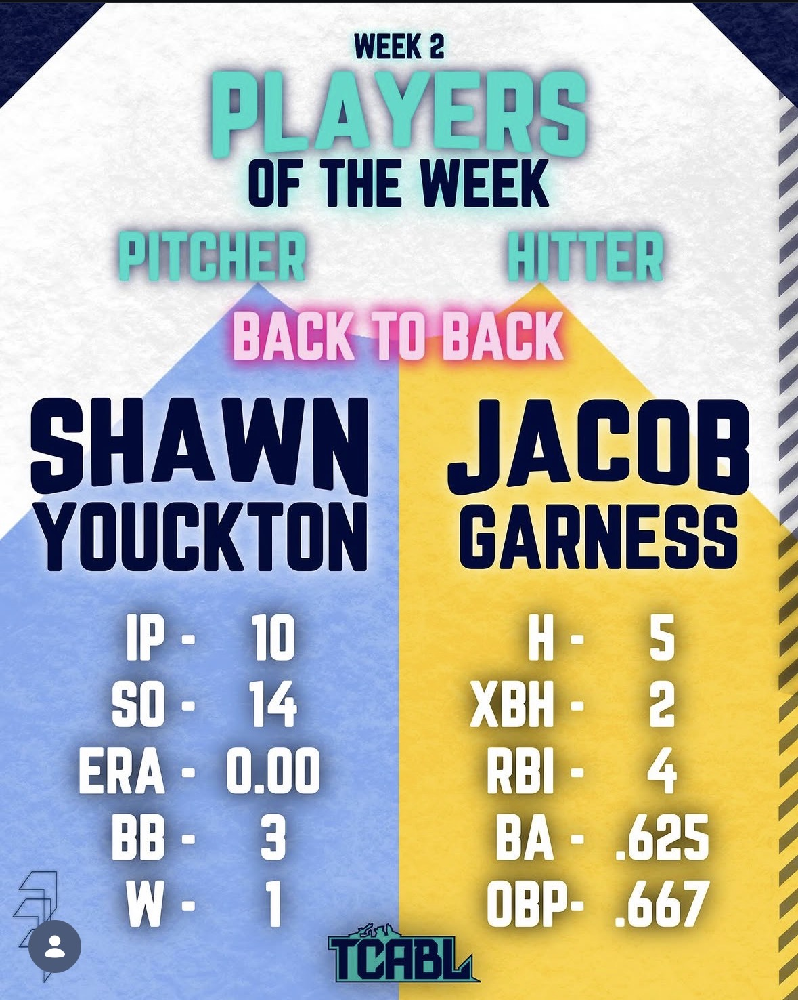
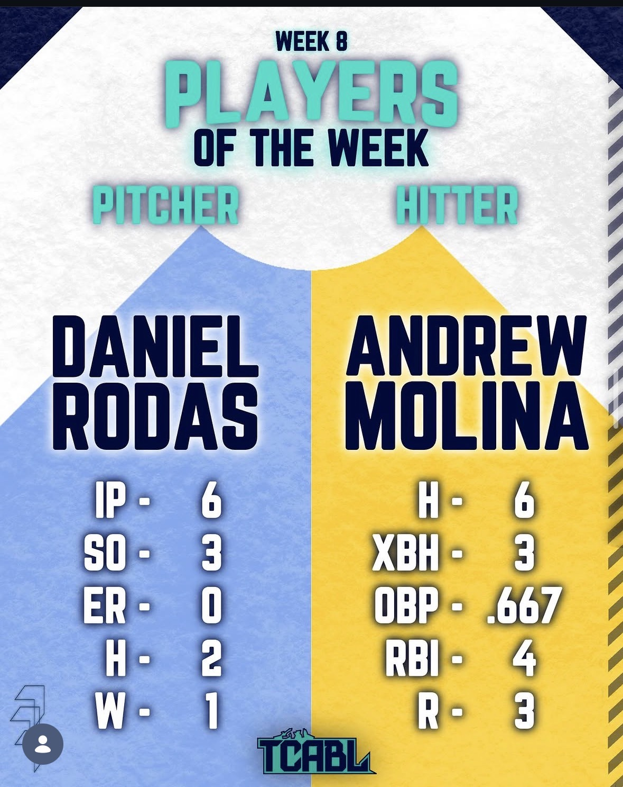
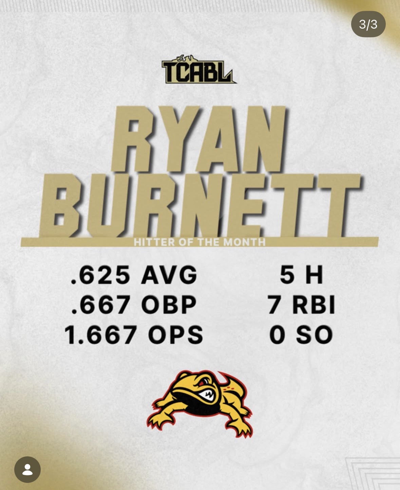

FRANCHISE HISTORY
THE STORY OF THE SALAMANDERS
Team achievements, league honors, postseason runs, and the players who have represented the Manders.
TCABL HISTORY • 2025
INAUGURAL
COACH OF THE YEAR
Esteban Fernandez Jr.
Coach Fernandez received the first-ever Coach of the Year award in TCABL history, making the 2025 honor an inaugural league achievement and a permanent part of Salamanders history.
First in TCABL history
2025 Coach of the Year
2025

Six All-Stars
Six Salamanders earned All-Star recognition in the 2025 season, the first documented All-Star class in the franchise record book.
2026

10-Win Improvement
The Salamanders jumped from 3 wins in 2025 to 13 wins in 2026 — a ten-win year-over-year improvement.
2026
Playoff Run
The Manders won their Wild Card game and pushed the top-seeded Gunners to Game 3 of the semifinals, falling by one run.
2025 All-Stars
6 Selections
- Jacob Garness
- Jordan Goss
- Matthew Swinkey
- Tim Robertson
- Andrew Molina
- Esteban Fernandez Jr.
2026 All-Stars
6 Selections
- Adrian Echeverri
- Alex Gonzales
- Jeff Buelow
- Jordan Goss
- Ryan Burnett
- Sean Thornton
League Award
2025 Inaugural Coach of the Year
Esteban Fernandez Jr. — recipient of the first Coach of the Year award in TCABL history.
2026 ALL-LEAGUE HONORS
TCABL ALL-LEAGUE TEAMS
3 Salamanders selections

2026 • 1st Team
Sean Adams
TCABL All-League First Team.

2026 • 1st Team
Sean Thornton
TCABL All-League First Team.

2026 • 2nd Team
Jordan Goss
TCABL All-League Second Team.
Official 2026 TCABL All-League recognition is preserved here as part of the Salamanders franchise history.
2025 WEEKLY HONORS
TCABL HITTERS OF THE WEEK
3 Salamanders honors documented

Week 1 • 2025
Jacob Garness
TCABL Hitter of the Week.

Week 2 • 2025
Jacob Garness
TCABL Hitter of the Week — back-to-back weekly honors.

Week 8 • 2025
Andrew Molina
TCABL Hitter of the Week.
These are recorded as league honors only. The stat lines printed on the original weekly award graphics describe those award periods and are not used in the Salamanders season or career stat database.
2026 MONTHLY HONORS
TCABL HITTER OF THE MONTH
1 Salamanders monthly honor documented

May • 2026
Ryan Burnett
TCABL Hitter of the Month.
Beginning in 2026, TCABL moved from weekly player honors to monthly awards. Statistics printed on the original award graphic describe the award period only and are not used in the Salamanders season or career stat database.
All-Star recognition is recorded as an achievement only. Any statistics shown on original All-Star announcement graphics were snapshots at the time of selection and do not replace the final season statistics in the Salamanders record book.